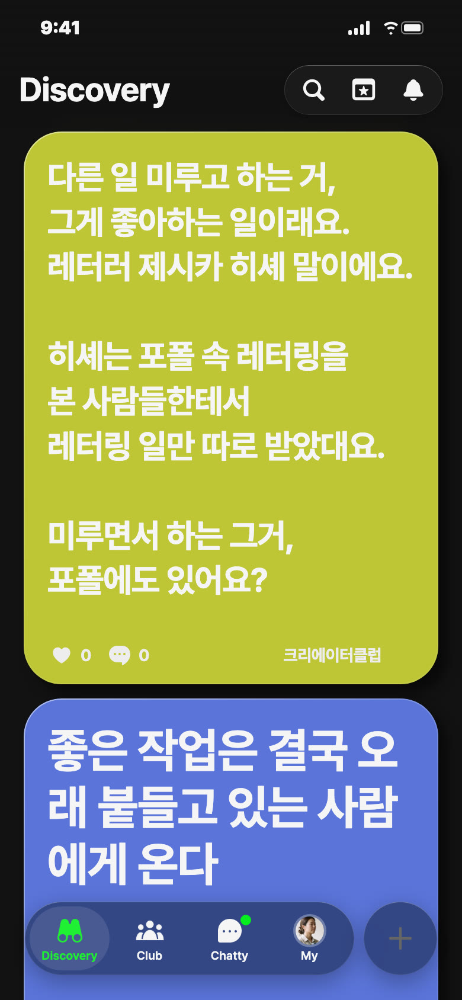
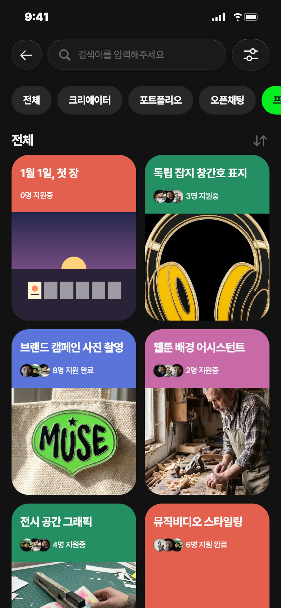
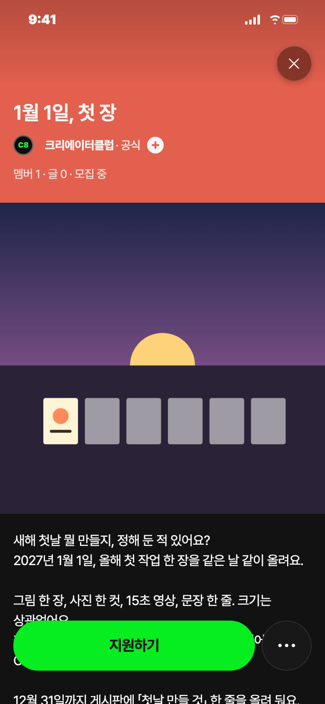
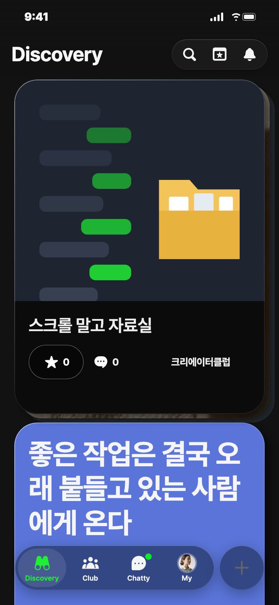
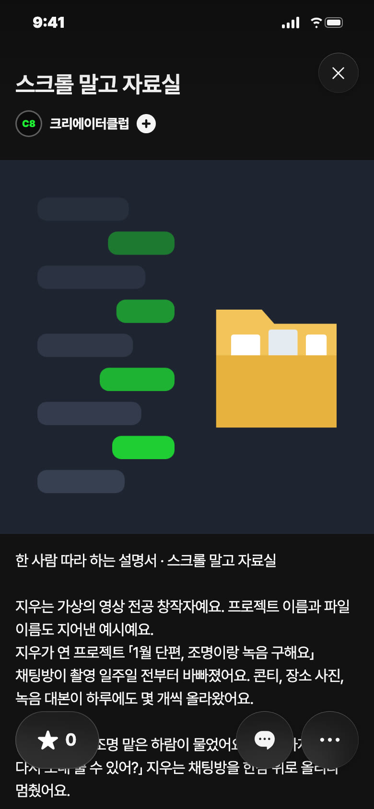

C8 앱 게시 시안 · 2026. 11. 26. 목요일 · 오늘 추천 영감
오늘 추천 · 영감 · 오늘 낮 12시 · 노랑

왜 오늘: 목요일 1순위 영감 · 창작자 말 그대로 — 제시카 히셰 본인 사이트 FAQ 두 문장.
보낼 사람: 외주는 일러스트로 받는데 요즘 손글씨만 만지는 동기에게 「너 그 글씨 포폴에 없잖아」
받고 싶은 댓글: 예시·가상: 미루면서 그린 손글씨, 오늘 포폴에 처음 올렸어요.
참고: 배경색은 앱이 무작위로 정해요. 시안 색은 예시.
영감 글
다른 일 미루고 하는 거, 그게 좋아하는 일이래요. 레터러 제시카 히셰 말이에요. 히셰는 포폴 속 레터링을 본 사람들한테서 레터링 일만 따로 받았대요. 미루면서 하는 그거, 포폴에도 있어요?
비축 · 프로젝트 · 12월 첫 주 후보 · 게시일 미정 · 코랄


왜 지금: 연말에 새해 첫 작업을 같은 날 같이 올리는 판(날짜 하나·하루 판).
보낼 사람: 새해마다 다짐만 하는 동기에게 「올해는 1일에 한 장 올리자」
받고 싶은 지원 채팅: 예시·가상: 사진 찍어요. 1월 1일 아침 동네 첫 버스 찍을게요.
게시 전: 수락할 운영자 한 사람.
제목
1월 1일, 첫 장
모집 내용
2027년 1월 1일, 올해 첫 작업 한 장을 같은 날 같이 올릴 사람을 찾아요. 하는 일 한 줄과 첫날 만들 것 하나를 적어 주세요.
설명
새해 첫날 뭘 만들지, 정해 둔 적 있어요? 2027년 1월 1일, 올해 첫 작업 한 장을 같은 날 같이 올려요. 그림 한 장, 사진 한 컷, 15초 영상, 문장 한 줄. 크기는 상관없어요. 지원할 때 하는 일 한 줄과 첫날 만들 것 하나를 적어 주세요. C8이 수락하면 1월 1일을 일정에 넣어 둘게요. 12월 31일까지 게시판에 「첫날 만들 것」 한 줄을 올려 둬요. 1월 1일 하루 동안 만든 걸 각자 포트폴리오에 올리고, 게시판에 링크를 남겨요. 늦잠 자도 그날 안에만 올리면 돼요. 지원은 12월 28일(월)까지예요. 상품은 없어요. 1월 2일 아침엔, 게시판에 서로 다른 첫 장이 쭉 놓여 있을 거예요.
비축 · 포트폴리오 · 설명서 다음 편 후보 · 게시일 미정


왜 지금: 프로젝트 채팅방이 바빠지는 촬영 전 — 자료실·폴더 기능 하나.
보낼 사람: 졸작 팀 단톡방에서 파일 다시 보내 달라는 말 듣는 친구에게 「자료실 봐」
받고 싶은 댓글: 예시·가상: 저희 팀은 맨날 「위로 올려 봐」였는데요.
확인 범위: iOS 26.46.0 태그 코드·디자인 원본. 실기기 화면은 나나 확인 전.
제목
스크롤 말고 자료실
설명
한 사람 따라 하는 설명서 · 스크롤 말고 자료실 지우는 가상의 영상 전공 창작자예요. 프로젝트 이름과 파일 이름도 지어낸 예시예요. 지우가 연 프로젝트 「1월 단편, 조명이랑 녹음 구해요」 채팅방이 촬영 일주일 전부터 바빠졌어요. 콘티, 장소 사진, 녹음 대본이 하루에도 몇 개씩 올라왔어요. 촬영 전날 밤, 조명 맡은 하람이 물었어요. 「콘티 마지막 판 다시 보내 줄 수 있어?」 지우는 채팅방을 한참 위로 올리다 멈췄어요. 그 콘티는 이미 프로젝트 자료실에 있었어요. 채팅방에서 주고받은 사진·파일은 자료실에 따로 모여요. 지우는 「콘티」 폴더를 만들어 마지막 판을 옮겨 두고, 하람에게 폴더 이름만 말했어요. 다음 날 아침부터는 아무도 위로 올리지 않았어요. 다들 자료실 「콘티」 폴더부터 열었어요.